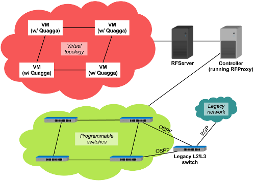

Virtual IP Routing Services over OpenFlow networks
RouteFlow is an open source project to provide virtualized IP routing services over OpenFlow enabled hardware.
A typical RouteFlow use scenario is composed by an OpenFlow controller application (RFProxy), an independent RouteFlow server (RFServer), and a virtual network environment that reproduces the connectivity of a physical infrastructure and runs IP routing engines (e.g. Quagga).
The routing engines generate the forwarding information base (FIB) into the Linux routing tables according to the configured routing protocols (e.g., OSPF, BGP). In turn, the Linux IP and ARP tables are collected by RouteFlow client (RFClient) processes and then translated into OpenFlow tuples that are finally installed in the associated OpenFlow-enabled devices in the forwarding plane. The diagram below illustrates this scenario:
 You can also check out RouteFlow's website and video presentation for more information.
RouteFlow relies on technologies such as:
You can download the newest RouteFlow distribution from our GitHub repository. Further instructions for installing and running RouteFlow are provided in the README file. It's very easy to install on Ubuntu 12.04!
The main goal of RouteFlow is to develop an open-source framework for virtual IP routing solutions over commodity hardware implementing the OpenFlow API. RouteFlow aims at a commodity routing architecture that combines the line-rate performance of commercial hardware with the flexibility of open source routing stacks (remotely) running on general purpose computers. As an outcome of this point in the design space of routing solutions, we expect to provide: